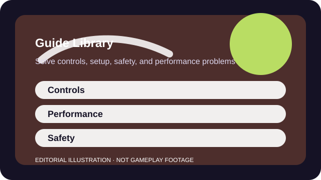

USEFUL FIRST READS
Start with the blocker you can name clearly
New to PC controls
Set up movement, aim, and keybind habits that make new PC play less awkward and much less tiring.
Settings feel wrong
Pick a mouse or stick sensitivity you can keep for weeks instead of changing it after every rough match.
Performance feels unstable
Find the settings that smooth busy fights without destroying visibility or turning every patch into a full re-tune.
Joining friends online
Use your first ten matches to learn the objective, map flow, and recovery habits before you obsess over stats.
The guide library is organized around problems rather than around game genres. That keeps the advice portable: a better setup process or clearer spending rule should help you across more than one game.

CATEGORY
Controls
Use these when input feel, binds, or aim habits are the real blocker.
CONTROLS
How to Choose a Gaming Sensitivity You Can Keep
Pick a mouse or stick sensitivity you can keep for weeks instead of changing it after every rough match.
Read guide →CONTROLS
How to Improve Aim Without Endless Grinding
Build useful aim through short deliberate drills, target selection, and review instead of endless warm-ups.
Read guide →CONTROLS
Controller Settings Guide for New Players
Tune dead zones, button layout, and aim behavior without rebuilding your controls every day.
Read guide →CONTROLS
Keyboard and Mouse Basics for New PC Players
Set up movement, aim, and keybind habits that make new PC play less awkward and much less tiring.
Read guide →CATEGORY
Performance
Open these when stutter, latency, or browser overhead matter more than raw skill.
PERFORMANCE
How to Optimize Game Settings for Stable FPS
Find the settings that smooth busy fights without destroying visibility or turning every patch into a full re-tune.
Read guide →PERFORMANCE
How to Reduce Input Lag Safely
Lower end-to-end latency by removing obvious bottlenecks before chasing risky tweaks or misinformation.
Read guide →PERFORMANCE
How to Make Browser Games Run Better
Make browser games smoother by attacking tabs, extensions, acceleration, and network clutter in the right order.
Read guide →CATEGORY
Teamwork
These are the practical reads for the first ten matches, group nights, and calmer comms.
TEAMWORK
Multiplayer Beginner Checklist: Your First Ten Matches
Use your first ten matches to learn the objective, map flow, and recovery habits before you obsess over stats.
Read guide →TEAMWORK
Clear Team Communication Without Overcalling
Make comms useful by sharing facts, timing, and intent without narrating every thought.
Read guide →CATEGORY
Safety
Read these before spending money or handing a social live-service game to a family member.
SAFETY
How to Enjoy Free-to-Play Games Without Overspending
Enjoy live-service games with a plan for passes, packs, gacha, and convenience offers before emotion makes the choice for you.
Read guide →SAFETY
Family Gaming Safety and Parental Controls Guide
Set privacy, chat, time, and purchase controls before a child or teen explores public game spaces.
Read guide →CATEGORY
Setup
Use these when cross-play, cloud access, or mixed-device planning is the actual problem.
SETUP
Cross-Play Guide: Playing With Friends Across Platforms
Check accounts, parties, and progression rules before assuming every version of a game can play nicely together.
Read guide →SETUP
Cloud Gaming Guide for Beginners
Use cloud gaming when convenience beats perfect latency, and know exactly where the tradeoffs start.
Read guide →CATEGORY
Wellbeing
Comfort and accessibility belong in the same decision stack as performance.
WELLBEING
Healthy Gaming Setup: Comfort, Breaks, Audio and Posture
Make gaming easier on hands, back, eyes, and ears with small setup habits that survive real life.
Read guide →CATEGORY
Editorial
This is where the site's publishing model and limits are explained clearly.
EDITORIAL
How We Build a Game Fit Profile Without Pretending It Is a Scored Review
Understand how a sourced fit profile differs from a hands-on scored review and what evidence we publish on purpose.
Read guide →SOURCES AND LIMITS
What these guides are for
- Explain a repeatable process.
- Link out to official support surfaces for live settings and policies.
- Call out limits so you know what still depends on your device or game.
- Prefer practical checklists over abstract theory.
- Replace current official support documentation.
- Promise one magic setting for every player.
- Act as medical or legal advice.
- Assume every game or platform exposes identical options.